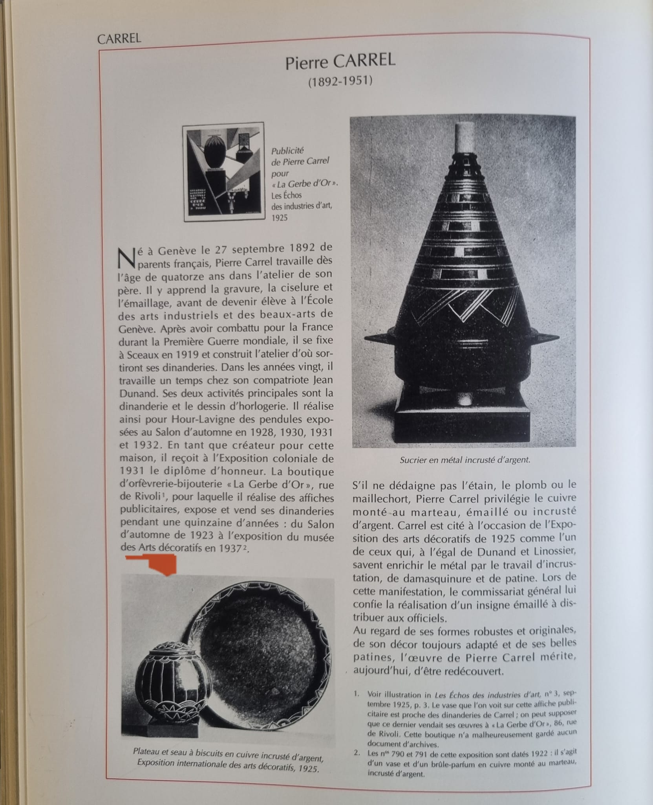
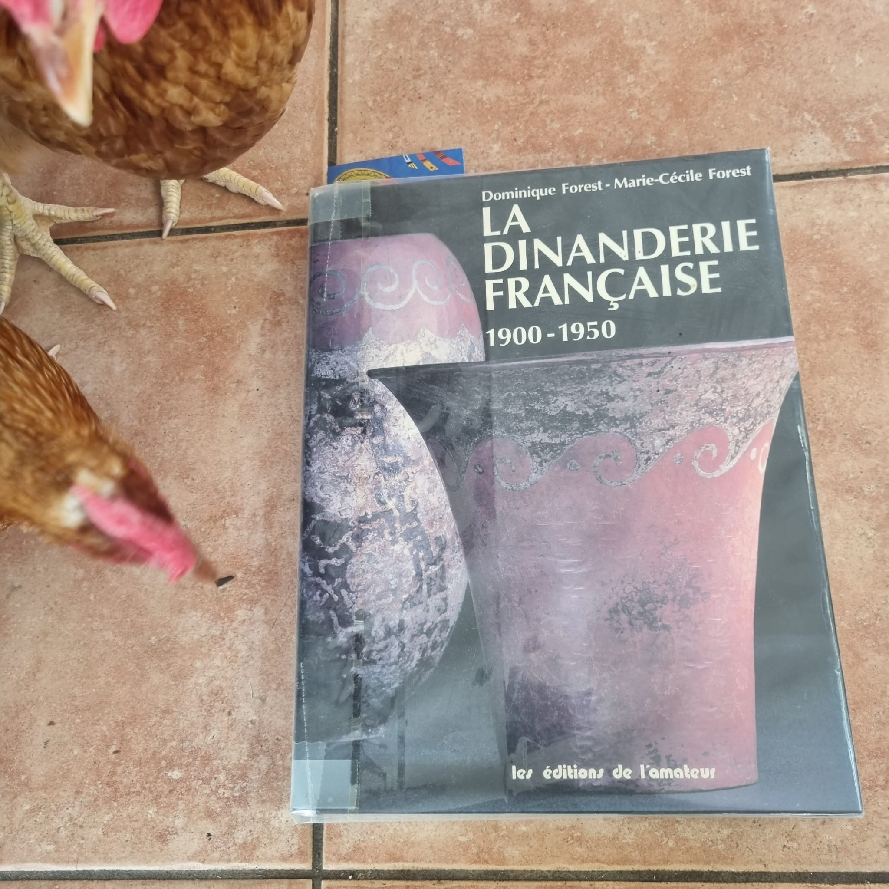

Cuivre
Cuivre monté au marteau, travaillé, patiné et parfois émaillé.
1892 — 1951 · DINANDERIE · ART DÉCO
Dinandier, graveur, ciseleur et émailleur, Pierre Carrel a développé une œuvre dans le domaine des arts décoratifs du début du XXe siècle.
Découvrir son parcoursBIOGRAPHIE
Pierre Carrel est né à Genève le 27 septembre 1892, de parents français. D’après une notice publiée dans La Dinanderie française 1900–1950, il commence à travailler très jeune dans l’atelier de son père, où il apprend la gravure, la ciselure et l’émaillage.
Après sa formation à l’École des arts industriels et des beaux-arts et son expérience durant la Première Guerre mondiale, il s’installe à Sceaux en 1919. Son activité porte notamment sur la dinanderie et l’horlogerie. Il travaille également un temps avec son compatriote Jean Dunand.
Son travail associe notamment le métal martelé, l’émail, les incrustations d’argent, la damasquinure et les patines. Des sources du marché de l’art attestent encore aujourd’hui l’existence d’œuvres signées Pierre Carrel.
« L'œuvre de Pierre Carrel mérite, aujourd'hui, d'être redécouverte. »
— Notice consacrée à Pierre Carrel dans La Dinanderie française 1900–1950, Dominique Forest et Marie-Cécile Forest, 1995.
ŒUVRES & TECHNIQUES
Cuivre monté au marteau, travaillé, patiné et parfois émaillé.
Incrustations d’argent et jeux de matières faisant partie de son vocabulaire décoratif.
Éléments émaillés intégrés à des formes géométriques et décoratives.
Vases, plats, objets décoratifs et pièces utilitaires réalisés dans le contexte de la dinanderie française.

CHRONOLOGIE
Naissance à Genève, le 27 septembre.
Installation à Sceaux et développement de son atelier.
Présence dans le contexte de l’Exposition internationale des Arts décoratifs et industriels modernes de Paris.
Participation au Salon d’automne, selon la notice biographique reproduite ci-dessus.
Diplôme d’honneur à l’Exposition coloniale, selon la notice.
Œuvres présentées à l’exposition du musée des Arts décoratifs, selon la notice.
Décès de Pierre Carrel.
OUVRAGE DE RÉFÉRENCE
Dominique Forest et Marie-Cécile Forest, Les Éditions de l'Amateur, 1995.
Cet ouvrage de référence consacré à la dinanderie française comprend une notice sur Pierre Carrel. La page photographiée sur ce site provient de cet ouvrage.

SOURCES
Projet documentaire : ce site sera enrichi avec les œuvres, photographies, archives et sources retrouvées. Les informations dont la source reste à vérifier sont volontairement présentées avec prudence.